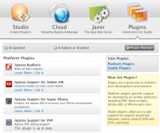
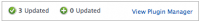

Contents |
What
Plugins are a great way to enhance your development environment. This screen displays the number of updated and added or enabled plugins is displayed at the top.
  Aptana Home - Plugins
Aptana Home - Plugins
{kind=link}
Platform plugins provide support for rapid and efficient web application development on platforms including PHP, MySQL, Ruby on Rails, Adobe AIR and the Apple iPhone. Studio plugins add support for several popular JavaScript libraries, source control (SVN and CVS) and more.
Plugin Notices
 Plugin Notices
{kind=link}
- Shows the number of recently updated and added plugins
- The link opens the Plugins Manager view (see Managing Plugins with the Plugins Manager View for details).
Update Details
This is the default view in the plugins screen. It lists the full names, version numbers, and prior versions of all installed plugins.
Platform, AJAX and Utility Tabs
The tabs split the list of plugins which are or can be installed/updated in your Aptana Studio. The Get It links launch the Eclipse Update wizard (Installing plugin details).
Getting to My Aptana - Jaxer
{kind=link}
- If My Aptana is not open in Studio, click the home icon or your user name link at the right end of the Studio status bar and click the Plugins icon
- If you navigated to another panel in My Aptana, click the Plugins icon